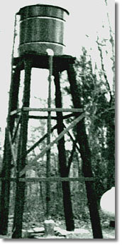
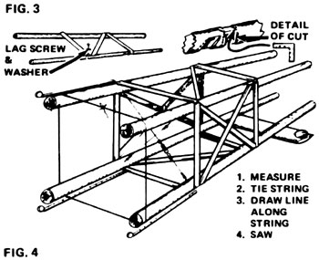
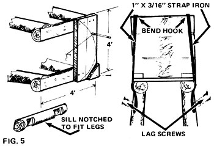
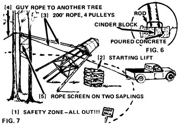

I Built My Own Water Tower
May/June 1976
by RICHARD HILTON
Maybe there's still some city dweller left in me, or perhaps I've just grown too accustomed to the conveniences of modern-day American life . . . but if there's one thing my year-round living quarters must have, it's running water. Thus, when I finally built my long-dreamed-of log cabin in Virginia-off in the woods, with no electricity-I resolved that the dwelling would be equipped with certain luxuries. Namely, a shower, a flush toilet, and a sink tap that really worked!
Now that didn't seem to me to be much to ask . . . but after giving the problem some thought, I found that I wasn't at all sure just where my precious water system's pressure was going to come from. Initially, I figured that a storage tank (which could easily be refilled by a little gasoline engine-driven pump) perched in the cabin's loft would probably handle the job satisfactorily. When I imagined what the inevitable leak in that tank would do to my dwelling's living area, however, I scrapped that idea fast!
The solution to my dilemma turned out to be a 375-gallon steel tank mounted atop a 15-foot-high platform at the edge of the clearing outside my cabin (see Fig. 1). The weight of the water stored in this elevated container produces about six pounds of static pressure in the cabin's water lines. This is less than the pressure supplied by most city systems and electric pumps . . . but is enough so that my shower delivers a pleasant, gentle spray and my toilet's flush tank refills without any annoying hiss.
In short, I've had nothing but success with my make-do water system . . . and I'd like nothing better than to tell you how you can construct your own version of the Hilton Homestead Water Tower.
MATERIALS
Start by obtaining a galvanized steel tank-the kind with a pipe fitting in the bottom and a conical lid on top-through one of the farm catalogs for around $140 (at least that's what I paid for mine three years ago). This will be the most costly part of your system.
By the way, as you flip through those farm catalogs, you may notice a listing or two for redwood tanks (which are often less expensive than steel). You should realize, however, that such containers have two drawbacks: First, if one is allowed to dry out it can develop permanent leaks. Second-and I consider this point to be even more important-if you purchase such a unit you'll be supporting the rather unsavory crowd that is currently making a fast buck by massacring our nation's dwindling supply of redwoods. So buy a steel tank.
Since water weighs eight pounds per gallon, no mathematical wizardry is needed to see that 375 gallons of the liquid (which is what a tank four feet tall and four feet in diameter will hold) tips the scales at a ton and a half. That's quite a bit of weight for a wooden tower to support right there, so you can figure that a storage container any larger might well tax your ability to construct its supporting understructure. On the other hand, it's a fair bet that you'll soon tire of constantly refilling a tank which is any smaller . I've found 375 gallons to be a good compromise, then, between keeping the water tower's design simple . . . and having an adequate supply of the vital fluid on hand at all times.
Fortunately, I had many fine pine trees growing here on my backwoods homesite . . . so I had no trouble finding and felling four 15-foot-long legs (each of which averaged ten inches in diameter, minus bark) for my tower. Whatever you use for your tower's main uprights, be sure they're more than strong enough for the job. Remember, I used poles that were ten inches in diameter!
If-like me-you make your storage tower's legs of wood, you're well advised to take precautions to preserve them. Insects like to eat away at trees just below their layers of bark, you know, and woodpeckers-in turn-make holes in that same wood to feed on those insects. Both these "forces of nature" tend to weaken timber. Sometimes so much that they compromise its strength. The first thing you should do to your soon-to-be tower legs, then, is strip away all their bark and (if possible) set the logs out to dry for the summer. Then, give each one a double coat of creosote. (Telephone poles-if you're lucky enough to get your hands on some-are ideal for your purpose, since they've been given a creosote treatment that's far superior to anything you're likely to do in your backyard.)
DECISIONS
I was faced with another dilemma when I got ready to erect my water tower: I could either [1] lay a foundation, build the support structure from the ground up, and get a crane (which was out of the question, since there are no cranes within 25 miles of here) to lift the storage tank into place, or [2] construct the tower on its side on the ground, tip it up, and then anchor the whole edifice in place. Some of my friends assured me that I'd be crazy to try the second plan . . . but I didn't seem to have much choice, so that's the one I chose.
For a foundation, I decided simply to lay down four cinder blocks-top surfaces flush with the earth's surface-to support the tower initially, after which I could anchor the erected tower both to the blocks and the ground with a pour of concrete.
THE TOWER
I began by building my tower in two identical halves-a front and a back-right on the ground. For this part of the project, I worked from an outline drawing (which had major dimensions to scale) much like the sketch shown in Fig. 2.
The 3/4-inch-deep notches in the tower's legs (see Fig. 3) were made to accommodate the necessary cross braces. (By the way, at that point in the fabrication of the tower, the legs had not yet been cut to exact length and each one was about a foot too long on both ends.) I made the notches for the braces by taking five or so closely spaced chain saw cuts in the wood-at right angles to a leg's length-and then gouging the indentation out flat with a chisel. The notches didn't turn out to be nearly as smooth as Fig. 3 would have you believe, by the way . . . but good brace contact is important, so do strive for clean cuts.
I decided to connect the braces to the legs with 5-inch lag screws and washers-rather than long nails-because I felt that spikes would lose their holding power as the wood dried and weathered over a long period of time. Also, I knew there would be a lot of strain on these joints when it came time to tilt the tower into an upright position . . . and I surely didn't want any part of the structure to fail then. Only lag screws, I thought, would give me the safety I desired.
After each pair of legs had been connected with braces, some friends helped me put the two halves of the tower together. Using boxes and firewood as supports (.Fig. 4), we positioned one completed tower half directly above its identical twin-which was lying flat on the ground-and tied them together with cross braces. We also rigged small cables (made of TV antenna guy wire material) between diagonally opposed legs to add extra strength and rigidity to the structure.
At that point, it was time to trim the legs to length. I did this by [1] measuring off the proper distance (see Fig. 4) from the horizontal leg braces to the rough-sawn bottom and top ends of the logs, [2] marking each spot with a thumbtack, and [3] wrapping a string around the four poles at these points. Then-using a lumber crayon-I marked a line along the cord, removed the string and thumbtacks, and made my cuts with the chain saw.
Thus, with little difficulty, I had built a sturdy tower that was four feet wide at the top, seven feet across at the bottom, and a couple inches short of fifteen feet tall.
THE UPPER PLATFORM
Once the tower's legs had been evened off, I was ready to top the structure with the four-foot-square platform on which I planned to place my 375-gallon galvanized steel tank.
I began the deck by cutting two four-foot sills from an eight-inch diameter, eight-foot-long log. I next scraped one side of each sill flat with a drawknife. Then I had a helper hold the logs, one by one, to the top end of the tower while I marked the contact points on each piece's underside. Finally, I cut notches at these contact points, as shown in Fig. 5.
(Incidentally, the distance between notches was not exactly the same for each sill . . . because the tower legs were not what you could call really straight. I had known that the uprights were slightly bowed when I began, but I used them anyway because I figured their curvature wouldn't affect the tower's load-carrying ability . . . and so far, it hasn't.)
After a good deal of trimming and trial assembly, I positioned the sills parallel with the tower's horizontal braces and with each other. Then I spiked them firmly in place and nailed four-foot-long floorboards across the sills. I calculated that spikes were appropriate for these joints since gravity ultimately holds this part of the structure together.
TOPPING IT ALL OFF
To lash the tank in place, I first traced out a circle four feet in diameter and centered on the finished platform. Next, I nailed down a triangular block of wood just outside the circle's perimeter-at each of the deck's four corners. Then I rolled the big steel drum into position-which wasn't difficult to do, since it maneuvered quite easily on the ground-and lashed it down with five-foot lengths of strap iron bent to conform to the shape of the tank's rim. Finally, I used screws to attach these anchoring straps to the tower legs.
THE BIG EVENT
On the day of the Big Hoist, my backyard looked something like Fig. 6. Naturally, I'd cleared the entire area of brush and debris prior to this critical part of my water reservoir's construction.
Two small saplings-each about six inches in diameter at the base-were left just at the edge of the clearing and just behind the spot where the raised tower would (if everything went right) come to rest. Then I stretched four or five short lengths of rope between the two trees to form a kind of "safety net" that'd catch the upright structure if it overshot its mark.
I attached my block and tackle-which consisted of two double blocks and 200 feet of half-inch rope-to a spot fifteen feet up on a nearby (and large) tree. From that attachment point the tackle was extended down and attached to a rope tied around one of the tower's top sills (Fig. 6) . . . and the free end of the 200-foot rope was led from the tree to the trailer hitch on my pickup truck.
Had we begun to pull on the rope at this stage, we would've accomplished little, because the tower (meeting no resistance at its base) would simply have slid flat along the ground. Soto give the structure a boost up in the world-we lifted its top with lever bars and piles of firewood until the legs on the underneath side of the tower could "dig in". This done, we were ready to begin hoisting.
At last, I signaled my assistant to give the truck some gas . . . and the tower began to rise slowly into the air. It continued to rise, until-just short of reaching the critical balance point beyond which the whole edifice would tip into place my driver came to the far end of the clearing and had to stop.
The rope was now stretched across the entire yard so I went over and innocently gave the line a slight sideways tug . . . then watched in horror as the tower rocked past vertical . . . over into the safety "net" . . . and back where it belonged. It then staggered back and forth in place for a moment and rumbled like far-off thunder before-finally-coming to rest.
SOME FINISHING TOUCHES
The tower-when it eventually quit dancing around-landed almost exactly where I wanted it to. Even so, the four temporary cinder block foundations did shift slightly, and one leg bounced off its mount entirely. I was able to pull the structure squarely onto its four supports once and for all, though, with the aid of two chains and a come-along.
At that point, I still had to secure the 19-plus-foot-tall structure in place. And I did so by digging some dirt from around each of the cinder blocks. Then I [1] drilled a hole horizontally through the base of every leg, [2] pounded a steel rod through each hole, [3] bent the rod down into the trench (as shown in Fig. 7), and [4] poured enough concrete into the dug-away areas to just cover the blocks. After anchoring each leg individually in this manner, I ended up with a tower that was permanently fastened to four separate, independent, and heavy supports.
With the tower finally up and secured, I turned my attention to routing water from the storage tank to my cabin. This was accomplished by screwing an "ell" and an adapter into the outlet at the bottom of the steel reservoir, and then running some plastic pipe (the black flexible kind) from this fixture to the inside of my dwelling.
I should add that I insulated all aboveground portions of the pipe. First, by wrapping the exposed conduit in glass wool and mylar tape (which is available in inexpensive kits) . . . then, by encasing the whole affair in some four-inch PVC pipe I happened to have left over from another project. I finished the job with couplers and PVC glue on all joints. The plumbing system which resulted was very solid and has proven to be virtually freeze-proof.
Here in the Northern Neck region of Virginia the winters never get cold enough to cause the entire contents of a large (375-gallon) water storage vessel to freeze. In more frigid areas, however, such a container might have to be protected with some sort of heater . . . such as the kind sold to prevent stock-watering tanks from icing over. If you live in the far north, this idea might be worth checking out.
AND IT WORKS
I'm truly pleased with my new water system. That big black-and-tan tower not only looks good sitting out on the edge of my clearing, but it does everything I ever wanted it to do. Namely, it puts six pounds of static pressure into my cabin's water pipes . . . which is all the "power" I need to operate my shower, faucet, and flush tank.
At the present time, I fill the steel storage container with a small, portable, gasoline-driven pump. In the future, though, I hope to convert to a hydraulic ram pump that is powered by a nearby stream.
Yep, I may be a little bit spoiled, up here in my backwoods palace, by all the conveniences of 20th century life . . . but I've got to have running water when I want it, or else I'm just not happy.
These days-needless to say-I'm positively ecstatic.
|
 |
 |
 |
|
 |
 |
|